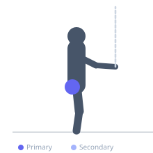
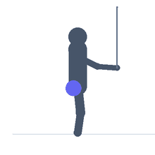

Exercise guide / Quadruped Fire Hydrant with Band
Quadruped Fire Hydrant with Band
The quadruped fire hydrant is a hip abduction and external rotation exercise performed on all fours. With a resistance band looped above the knees, the exerciser lifts one knee out to the side, mimicking the posture of a dog at a fire hydrant. The band adds resistance to the hip abduction movement, increasing gluteus medius and minimus activation. This exercise is frequently used in hip rehabilitation, knee alignment programs, and glute activation protocols.
Primary muscles
gluteus medius
gluteus minimus
Secondary muscles
gluteus maximus
tensor fasciae latae
Stabilizers
transverse abdominis
Equipment
Resistance Band (Loop / Mini Band)


Starting position
- Begin on hands and knees (quadruped position) with wrists directly under shoulders and knees under hips. Place a resistance band loop just above both knees.
Setup
- Choose a band resistance that allows the full range without compromising the spine or hip position. Keep the spine neutral — no rotation or lateral lean.
Steps
- Step 1: Begin in quadruped with the band loop above the knees and spine neutral.
- Step 2: While keeping the knee bent at 90 degrees, lift one knee out to the side as high as possible without rotating the hip or tilting the torso.
- Step 3: Hold the top position briefly, squeezing the outer glute.
- Step 4: Lower the knee back toward its starting position under control. Repeat all reps on one side before switching.
Coaching cues
- Imagine your hips are locked between two parallel walls — the torso cannot rotate
- Lead with the knee, not the foot — the knee is the highest point of the movement
- Squeeze the outer glute at the top of each rep
Breathing
- Exhale as you lift the knee. Inhale as you lower.
Range of motion
- Lift to the point where the hip joint reaches its end range without body rotation. Quality of movement over height.
Tempo
- 2s lift, 1s hold, 2s lower
Common mistakes
- Rotating the entire torso toward the lifting side — keep the spine square
- Tilting the supporting hip outward to gain extra range — the range must come from the hip joint, not the torso
- Losing neutral spine by arching or rounding the lower back
Safety
- Use a lighter band if the movement causes lower back pain or compensation
- Avoid with acute hip labral injuries — consult a physiotherapist
Training
- endurance: 12–20 reps
- mobility: 10–15 reps
- endurance: 2–3 sets
- mobility: 2–3 sets
- Rest: {'endurance': 45, 'mobility': 60}